Overview
The Cyber Dimension© Visual LVM is GUI manager for LVM .
User can view the storage system layout directly and do management task with mouse, and got the result right now. You will be free away from complex commands, the size & position calculating, and the boring parameters.
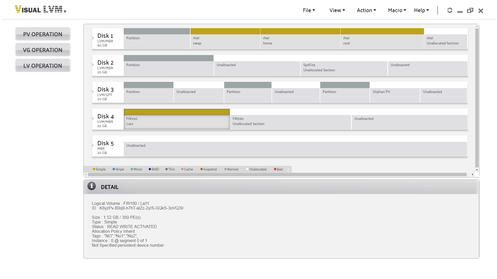
PV Operation
Create
Create Physical Volume on a partition. If user selected a partition from disk view panel before clicking PV Operation->Create button, it will be shown as selected in popup panel.
User can select multiple partitions in this operation.
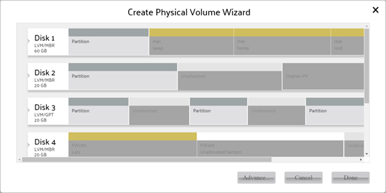
Advance
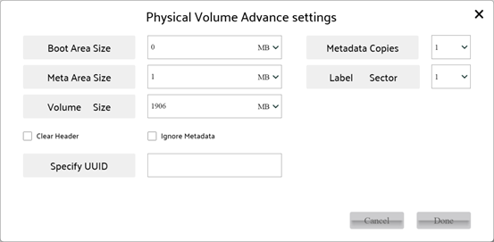
User can click Advance button to set advanced parameters. In advanced popup panel, user can configure the following parameters of Physical Volume:
| Boot Area Size | for boot issue, the non-booting Physical Volume should set to 0. |
| Metadata Copies | the count of metadata section in Physical Volume. It should be 0/1/2. The 0 means do not store metadata information of Volume Group in current Physical Volume. |
| Meta Area Size | the size of metadata section. |
| Label Sector | the index of sector for detecting information in Physical Volume. It should be set as 0/1/2/3. |
| Volume Size | the available size for Volume Group in Physical Volume. It is a value from 0 to total spare size except meta section and boot section in selected Physical Volume. User cannot set this parameter when selected multiple partitions. |
| Clear Header | Clear header sectors of partition when create Physical Volume. This flags is used to avoid system detects the original data in selected partition as other component. |
| Ignore Metadata | It means do not store metadata information in selected Physical Volume(s) except the existing Physical Volumes with metadata section is insufficient of setting of Volume Group. |
| UUID | User can specify UUID for current Physical Volume. The parameter is forbidden to set when user selected multiple partitions. |
Destroy
Create Physical Volume on a partition. If user selected a partition from disk view panel before clicking PV Operation->Create button, it will be shown as selected in popup panel. Remove detect information from Physical Volume and change it back to normal partition. If user selected a Physical Volume from disk view panel before clicking PV Operation->Destroy, it will be shown as selected in popup panel.
User can selects multiple partitions in this operation.
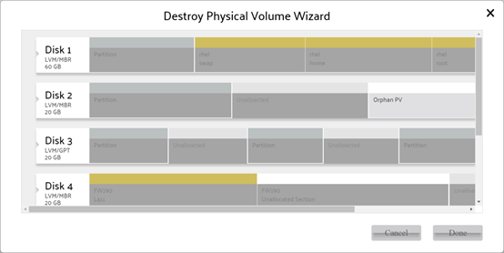
Change
Change parameter of selected Physical Volume.
User can change the following parameters of selected Physical Volume:
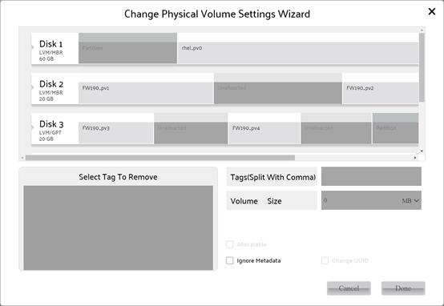
| Tags | User can add/remove tags for Physical Volume. Caution: The tag information is stored with Volume Group information, so you cannot modify tags on Physical Volume not belongs to Volume Group. |
| Volume Size | As the volume size setting of create Physical Volume operation. |
| Allocatable | To enable or disable allocate space from current Physical Volume. |
| Ignore Metadata | As the ignore metadata setting of create Physical Volume operation. |
| Change UUID | Let system create a random UUID for current Physical Volume. The operation is only for Physical Volume not belongs to Volume Group. |
VG Operation
Create
Create Volume Group. If user selected an orphan Physical Volume from disk view panel before clicking VG Operation->Create button, it will be shown as selected in popup panel.
User can select multiple Physical Volumes in this operation.
To create Volume Group, you need select at least one Physical Volume with metadata area to store meta data of Volume Group.
The name of Volume Group must be combined with ‘a’-‘z’,’A’-‘Z’,’0’-‘9’, “_“ and “-“.
The (physical) extent is allocation unit in Volume Group. The size of any Logical Volume in Volume Group must be multiple times of physical extent size.
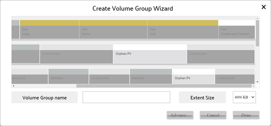
Advance
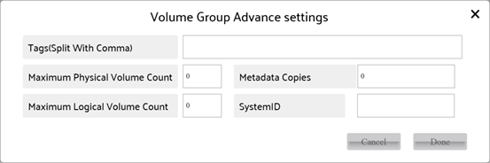
User can click Advance button to set advanced parameters. In advanced popup panel, user can configure the following parameters of Volume Group:
| Tags | User can set tags for Volume Group. The limit of tag is the same of name of Volume Group. |
| Max Physical/Logical Volume count | The count of Physical/Logical Volume can be created into current Volume Group. The range is 0-255. The value 0 means no limit. |
| Metadata Copies | The count of copies of Volume Group metadata will be stored into Physical Volume(s) of Volume Group. More copies mean more security, and fewer copies mean less space for metadata. |
| System ID | The ID used to limit access of current Volume Group. It can be one of machineid, uname, lvmlocal and file. Any machine can access Volume Group without system ID. Only machine with matched system ID can access Volume Group. |
Delete
Delete selected Volume Group.
If user selected a Volume Group from disk view panel before clicking VG Operation->Delete, it will be shown as selected in popup panel.
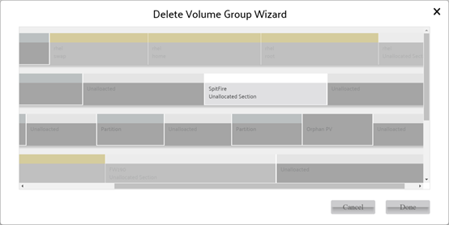
Append PV
Append new orphan Physical Volume into selected Volume Group.
If user selected a Physical Volume from disk view panel before clicking VG Operation->Append PV, it will be shown as selected in popup panel.
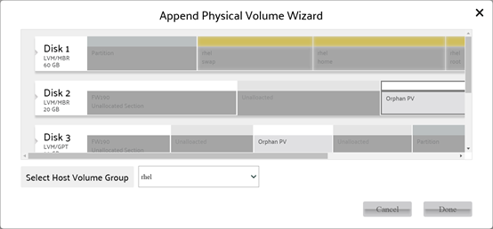
Remove PV
Remove Physical Volume from selected Volume Group.
If user selected a Physical Volume from disk view panel before clicking VG Operation->Remove PV, it will be shown as selected in popup panel.
Only the Physical Volume without instance of Logical Volume.
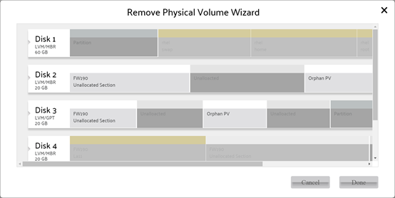
Rename
Rename Volume Group.
The new name should not duplicated with name of existing Volume Group, and the rule of name is the same as create Volume Group.
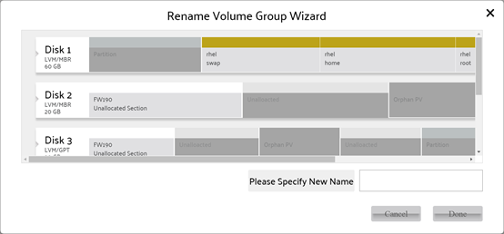
Change
Change parameter of selected Volume Group.
User can change the following parameters of selected Volume Group:
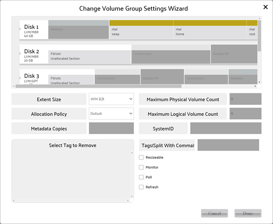
| Extent Size | For existing Volume Group, user can only reduce extent size for avoid Logical Volume size problem. |
| Allocation Policy | To inform LVM manager how to allocate space for new Logical Volume. |
| Metadata Copies | The count of copies of Volume Group metadata will be stored into Physical Volume(s) of Volume Group. More copies mean more security, and fewer copies mean less space for metadata. |
| Max Physical/Logical Volume count | The count of Physical/Logical Volume can be created into current Volume Group. The range is 0-255. The value 0 means no limit. |
| System ID | The ID used to limit access of current Volume Group. It can be one of machineid, uname, lvmlocal and file. Any machine can access Volume Group without system ID. Only machine with matched system ID can access Volume Group. |
| Tags | To add or remove tag of Volume Group. |
| Other options | Please view Logical Volume Manager Administration for more information. |
Backup/Restore
Backup or Restore configuration of selected Volume Group.
Click the button “Backup” on left-top of popup to switch the operation between backup and restore.
The left bar in popup is for selecting Volume Group to be handled, and the right bar in popup is for configuration file and path.
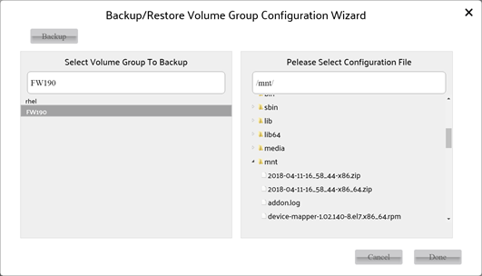
LV Operation
Create
Create Logical Volume.
The Logical Volume consists of one or more sections in Physical Volume which belongs to Volume Group.
LVM system supports Simple/Spanning/Stripe/Mirror/RAID4/RAID5/RAID6/StripeMirror/ Snapshot/Cache/Pool type of Logical Volume, the Visual LVM MKI supports Simple/Spanning/ Stripe/Mirror/RAID 4/RAID 5/RAID 6/StripeMirror type only.
The space of Logical Volume is allocated from Physical Volume which belongs to Volume Group, so it must consist of at least one section in Physical Volumes.
There is some limit for certain type Logical Volume followed,
For Simple : 1+ Physical Volume
For Stripe/Mirror : 2+ Physical Volumes
For RAID4/5 : 3+ Physical Volumes
For RAID6 : 5+ Physical Volumes
For StripeMirror : 4+ (must be even) Physical Volumes
User can set followed parameter:
To calculate the volume size, obey the rules followed:
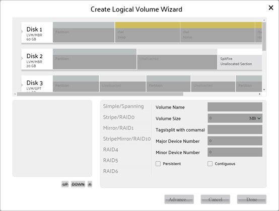
Advance
User can click Advance button to set advanced parameters of Logical Volume. The advanced settings for each type are different.
For Simple volume:
user can configure the following parameters of Logical Volume:
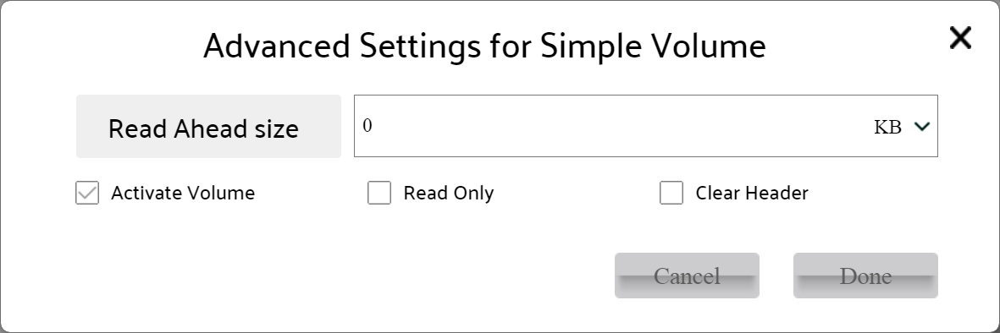
For Stripe volume:
user can configure the following parameters of Logical Volume
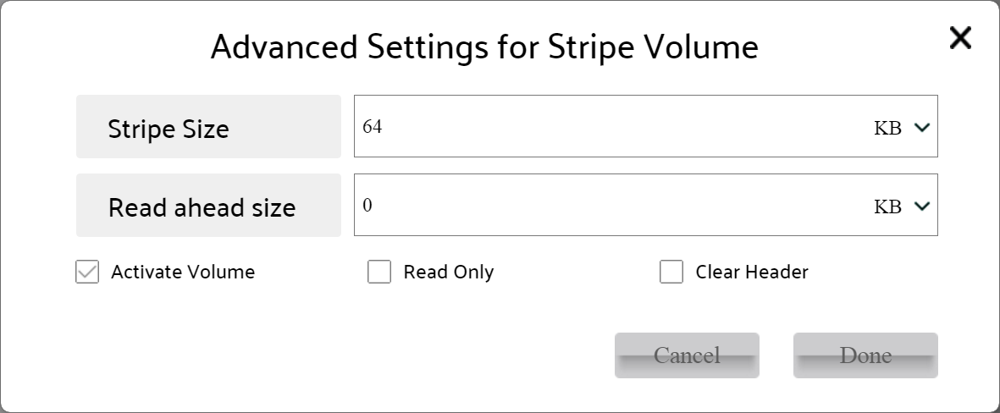
For Mirror volume:
user can configure the following parameters of Logical Volume
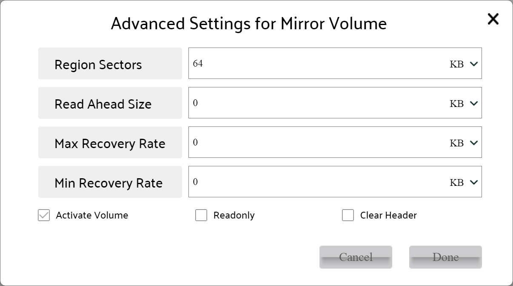
For StripeMirror volume:
user can configure the following parameters of Logical Volume
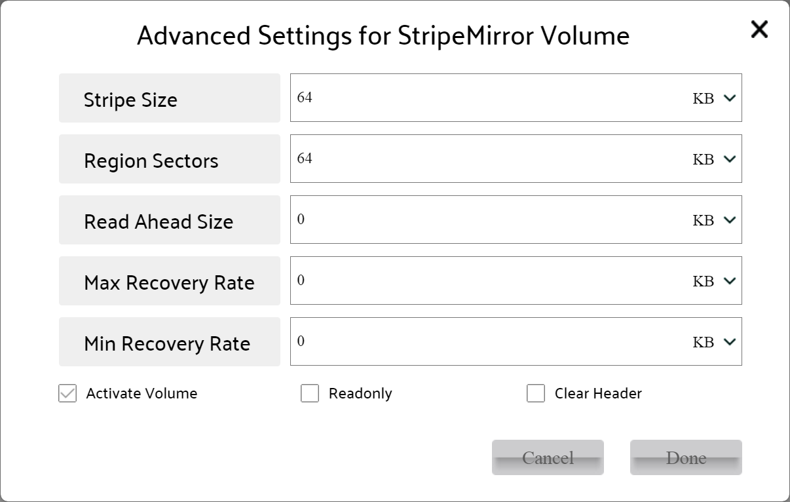
For RAID 4 volume:
user can configure the following parameters of Logical Volume
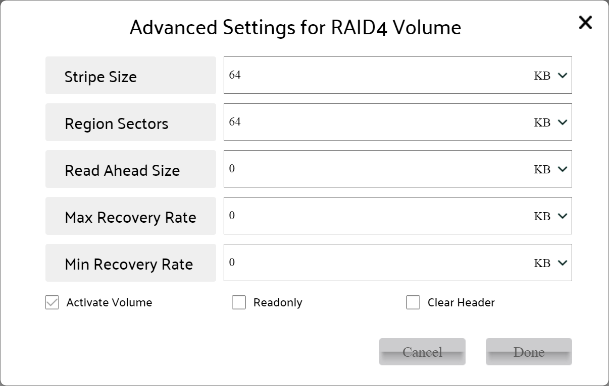
For RAID 5 volume:
user can configure the following parameters of Logical Volume
For RAID 6 volume:
user can configure the following parameters of Logical Volume
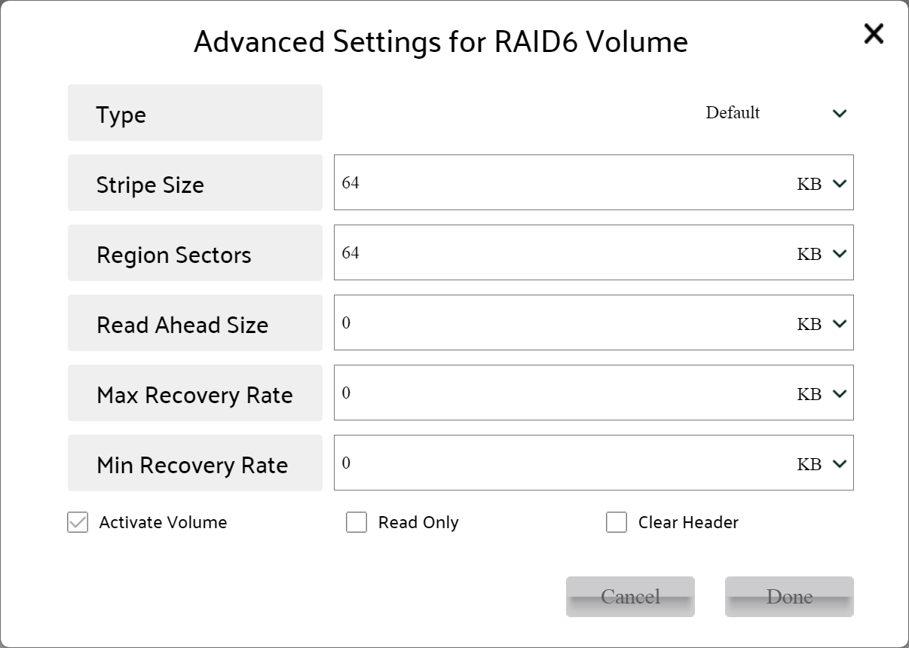
| Type | One of Visual LVM supported Logical Volume, the available type will be enabled by select matched Physical Volume(s). |
| Volume Name | The name of new volume, it obeys the rule of name of Volume Group. |
| Volume Size | The size of new volume, it is calculated by selected physical volume count, section size & volume type. |
| ss | Section(s) size in one Physical Volume |
| pc | the selected Physical Volume count |
| For Simple : size = ss For Spanning/Stripe: size = ss * pc For Mirror: size = ss For RAID4/5: size = ss*(pc-1) For RAID6: size = ss*(pc-2) For StripeMirror: size = ss*pc/2 | |
| Tag | The tag of Logical Volume, split by comma. |
| Tag | The tag of Logical Volume, split by comma. |
| Device number/Persistent | Persistent used to set a fixed device number for Logical Volume for access. When persistent was set, the device number input boxes are enabled to set, otherwise they are disabled. |
| Contiguous | The space of new volume must be contiguous in one Physical Volume. |
| Read ahead size | Read ahead size for volume for performance. |
| Activate Volume | Activate volume after it was created for access. |
| Read Only | Set volume read only or not. |
| Clear Header | Zero 4k bytes at head of volume, to avoid next user get the data of previous user. |
| Stripe Size | The size of one stripe. |
| Read ahead size | Read ahead size for volume for performance. |
| Activate Volume | Activate volume after it was created for access. |
| Read Only | Set volume read only or not. |
| Clear Header | Zero 4k bytes at head of volume, to avoid next user get the data of previous user. |
| Region Size | The size of one reading/writing operation. |
| Read ahead size | Read ahead size for volume for performance. |
| Min/Max Recovery Rate | The data transfer rate for RAID recovering operation. |
| Activate Volume | Activate volume after it was created for access. |
| Read Only | Set volume read only or not. |
| Clear Header | Zero 4k bytes at head of volume, to avoid next user get the data of previous user. |
| Stripe Size | The size of one stripe. |
| Region Size | The size of one reading/writing operation. |
| Read ahead size | Read ahead size for volume for performance. |
| Min/Max Recovery Rate | The data transfer rate for RAID recovering operation. |
| Activate Volume | Activate volume after it was created for access. |
| Read Only | Set volume read only or not. |
| Clear Header | Zero 4k bytes at head of volume, to avoid next user get the data of previous user. |
| Region Size | The size of one reading/writing operation. |
| Read ahead size | Read ahead size for volume for performance. |
| Min/Max Recovery Rate | The data transfer rate for RAID recovering operation. |
| Activate Volume | Activate volume after it was created for access. |
| Read Only | Set volume read only or not. |
| Clear Header | Zero 4k bytes at head of volume, to avoid next user get the data of previous user. |
| Type | The sub type of RAID5. |
| Region Size | The size of one reading/writing operation. |
| Read ahead size | Read ahead size for volume for performance. |
| Min/Max Recovery Rate | The data transfer rate for RAID recovering operation. |
| Activate Volume | Activate volume after it was created for access. |
| Read Only | Set volume read only or not. |
| Clear Header | Zero 4k bytes at head of volume, to avoid next user get the data of previous user. |
| Type | The sub type of RAID6. |
| Region Size | The size of one reading/writing operation. |
| Read ahead size | Read ahead size for volume for performance. |
| Min/Max Recovery Rate | The data transfer rate for RAID recovering operation. |
| Activate Volume | Activate volume after it was created for access. |
| Read Only | Set volume read only or not. |
| Clear Header | Zero 4k bytes at head of volume, to avoid next user get the data of previous user. |
Delete
Delete selected Logical Volume.
If user selected a Logical Volume from disk view panel before clicking LV Operation->Delete, it will be shown as selected in popup panel.
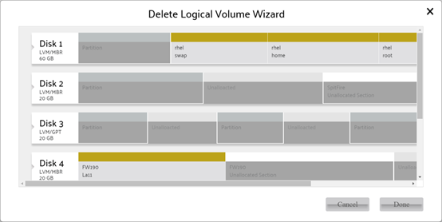
Rename
Rename Logical Volume.
The new name should not duplicated with name of existing Logical Volume in Volume Group, and the rule of name is the same as create Volume Group.③
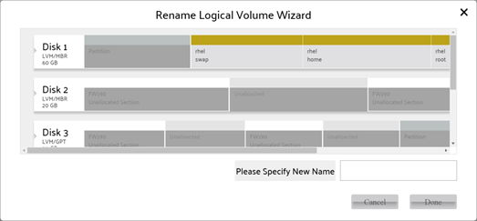
Change
Change parameter of selected Logical Volume.
User can change the following parameters of selected Logical Volume:
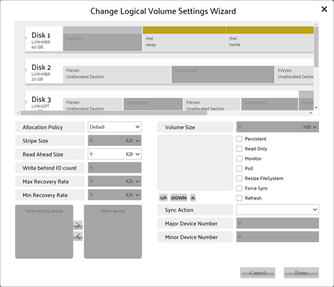
| Allocation Policy | To set the allocation policy for Logical Volume for extending operation. |
| Stripe Size | For extending only, to set the stripe size of the new allocated section. |
| Read ahead Size | Read ahead size for volume for performance. |
| Write Behind IO Count | For Mirror type only, flushing data to standby device after the count of writing operations were done. |
| Min/Max Recovery Rate | For Mirror/StripeMirror/RAID 4/RAID 5/RAID6 type only, the data transfer rate for RAID recovering operation. |
| Write mostly | For Mirror type only, all reads to device with write mostly setting will be avoided unless necessary |
| Volume Size | User can vary volume size by input or drag. When certain volume was selected, drag bar with twinkling strip will be showing on all sections of volume. User can drag any twinkling strip to shrink volume. To extend volume, user need to select spare section in Physical Volume belongs to Volume Group first, and drag the twinkling strip on new space to extend. Be aware that for complex volume(Mirror/StripeMirror/RAID 4/RAID 5/RAID 6) the count of Physical Volume of selected spare space must be equal with count of Physical Volumes in current Logical Volume or extend operation is disabled. For Stripe type, user can select any count of Physical Volume for extend operation. The selected Physical Volume will be showing in list bar after Volume Size for user exchange the order or remove it. |
| Device number/Persistent | Persistent used to set a fixed device number for Logical Volume for access. When persistent was set, the device number input boxes are enabled to set, otherwise they are disabled. |
| Sync Action | To initiate a RAID scrubbing operation. |
| Read Only | Set volume read only or not. |
| Other | Please view Red Hat Logical Volume Manager Administration for detail |